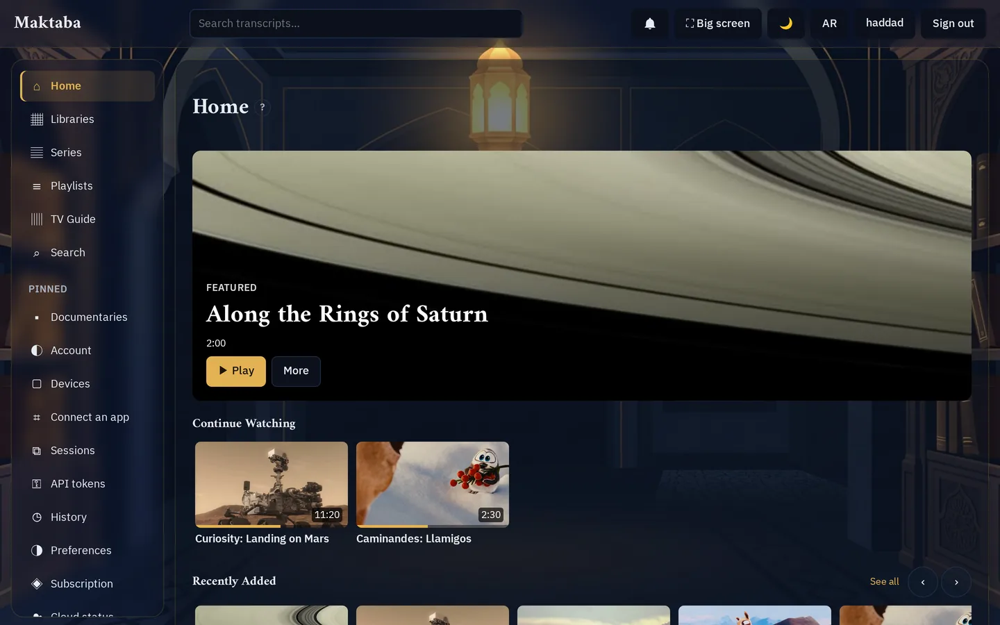
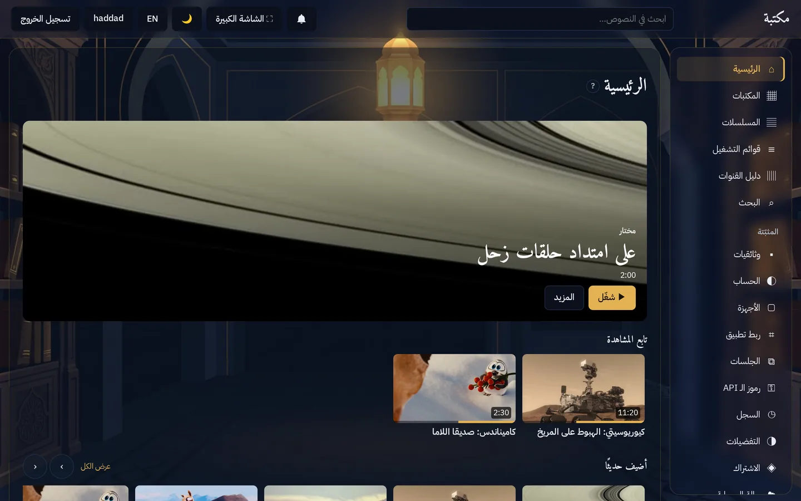

Tauri 2, apps/desktop: WKWebView on the Mac, WebView2 on Windows, webkit2gtk on Linux. The window is the
web app (web/dist, or the local server); first-run setup is the web page
web/src/pages/Setup/SetupWizard.tsx. The images are the web app as maktaba.tv shows it, captured in CI on
the demo library (web/packages/website/static/shots/web-home-*-1440.webp). No capture of the shell itself (its
frame, menus, tray, dialogs, setup screens or installers) exists in the repository or in any CI artifact.


"theme": "Dark", "backgroundColor": "#0b111c" (tauri.conf.json:28–29)."decorations": true, "titleBarStyle": "Visible" (tauri.conf.json:25–27), and the web app draws its own header under it: two bars.src/lib.rs:328–530). Its titles are English literals ("File", "Library", "Help"), so it stays English in Arabic.tauri-plugin-dialog, MessageDialogKind::Error (src/shell.rs:386–390).tray-icon; StatusNotifier on Linux): a dozen text rows and more (src/tray.rs, entries). Only the icon is drawn: a status dot on Windows and Linux (tray::badge).-setup.exe (tools/release/win-app/payload.sh; the hooks are logic only), WiX .msi (en-US only), a .dmg without a background, AppImage, .deb, .rpm. No header, sidebar, banner or dialog image is set.web/src/styles/app.css:3740, 40 rem), inside the OS frame.web/mockups/desktop/ (main window, tray, drag and drop) use a green accent from before Ink & Brass; this story replaces them._mac-app.yml, _win-app.yml, _linux-app.yml and _unit.yml's desktop-shell* jobs build and test, and upload no image.